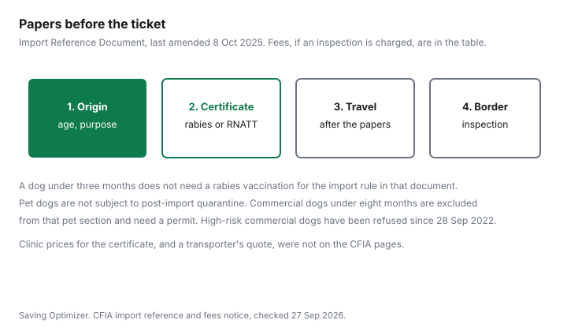

Pets · Canada
Bringing a Dog or Cat Into Canada: CFIA Rules and Costs
Bringing an animal into Canada is a paperwork problem with a fee schedule attached, not a shelter story. This page uses the Canadian Food Inspection Agency’s Import Reference Document, last amended 8 October 2025, the agency’s dog-adoption page, its commercial-dog page, and the Fees Notice, all checked 27 Sep 2026. Personal pets and commercial imports, which include adoption, are not the same door. Airline cargo prices and a private clinic’s certificate fee did not open. Dogs going the other way, into the United States, are the CDC snowbird guide. Not veterinary advice, and not a promise the animal will be admitted.
Key takeaways
- Pet dogs are not subject to post-import quarantine. A dog under three months does not need a rabies vaccination under the import document. Older dogs need the certificate that matches the country’s rabies status.
- Domestic cats under three months have no import restrictions in that document. Cats three months and older need a rabies vaccination certificate, a rabies-free-country history, or an antibody test at 0.5 IU/ml.
- Commercial dogs under eight months, including dogs for adoption, need a permit. Since 28 September 2022, commercial dogs from high-risk rabies countries are prohibited.
- Fees Notice, column as of 31 March 2026: single-use permit consideration $43.12, multiple-use $73.90. Dog, cat, or ferret inspection for the general line: $36.95 for the first animal and $6.16 for each additional one.
- A clinic’s certificate price and a transporter’s quote were not on the CFIA pages. The animal’s life after the border is the dog-cost guide and the adoption guide.
CFIA basics: personal pets vs commercial imports
The import document is incorporated into the Health of Animals Regulations. Personal pet dogs travel under the dog section.
Commercial dogs less than eight months old do not. The document says that section does not apply to them, and that they may only be imported under the permit paragraph of the regulations. The agency’s dog page defines commercial dogs to include animals for sale, adoption, fostering, breeding, exhibition, or research, and dogs given or transferred to another person. A rescue flight is not “my pet” because the listing used the word adopt.
The interactive tool on the bringing-animals page sorts the same ideas: personal versus commercial, age bands under three months, three to eight months, and eight months or older, and whether the owner is travelling with the dog. Rabies-free countries named on that tool, when it was checked 27 Sep 2026, were Australia, Fiji, Finland, Iceland, Ireland, Japan, New Zealand, Sweden, and the United Kingdom, meaning England, Scotland, Wales, and Northern Ireland. The United States and Mexico sat under a “frequent” list, not under that rabies-free list. The legal designation is the one in the regulations. If a country is added or removed, the tool can change. Check it again before you travel. The airline guide is the carrier and the pet fee. It does not replace this paperwork.
Rabies certificate requirements by country status
Dogs under three months do not require rabies vaccination, and do not require a certificate that the country is rabies-free. That is the document’s note, not a suggestion to vaccinate early.
The agency’s adoption page says dogs cannot be effectively vaccinated against rabies before 12 weeks of age. Those two sentences answer different questions. One is the import minimum. The other is a warning that a shot given too young does not count as protection. Do not treat a puppy’s early shot as the certificate an older dog needs.
A dog eight months or older from a designated rabies-free country may enter with a veterinarian’s certificate that rabies has not existed there for the six months before shipment and that the dog was there for those six months or since birth, or with a valid rabies vaccination certificate in English or French that identifies the dog and shows it is currently vaccinated, or with a rabies neutralising antibody titre of at least 0.5 IU/ml taken at least 30 days after a prior vaccination, with the animal identified on the lab report. There is also a path for a dog that started in Canada and is returning from a rabies-free country. If none of that is met, an inspector can order vaccination at the owner’s expense. A dog eight months or older from a country that is not rabies-free needs the vaccination certificate or the antibody test. The non-rabies-free antibody line says the test is taken at least three to four weeks after vaccination, and the result on the page is still at least 0.5 IU/ml. The same order-to-vaccinate backup exists. Read the certificate against the paragraph for the country you are leaving, not against a blog summary.
Pet dogs under eight months that travel with the owner follow the rabies rules for eight-month dogs from that kind of country. Pet dogs under eight months that are not with the owner need those rabies rules and a separate veterinarian’s certificate: the dog was at least eight weeks old at the exam, free of clinical disease, vaccinated no earlier than six weeks for distemper, hepatitis, parvovirus, and parainfluenza, fit to travel, with the vaccine’s date, trade name, and serial number, and the exam’s date and time in the veterinarian’s handwriting. Import has to be within 72 hours of that exam. An assistance dog imported as a guide, hearing, or other service dog, when the user is the importer and travels with the dog, is not subject to the restrictions in that dog section.
Domestic cats under three months have no import restrictions in the document. Domestic cats three months or older need a veterinarian’s certificate in English or French that identifies the cat and says it is currently vaccinated against rabies, or that it comes from a rabies-free country where it lived for the six months before entry, or a titre of at least 0.5 IU/ml taken at least 30 days after vaccination, with the lab report. An inspector may order vaccination at the owner’s expense if that is not met. The cat-cost guide starts after the cat is home.
Commercial dogs under 8 months and rescue imports
As of 15 May 2021 the agency tightened import requirements for commercial dogs under eight months imported for breeding and for resale, and it says resale includes adoption. Permits are requested in My CFIA.
The commercial page’s date modified line is 19 May 2023. It points to the Automated Import Reference System for the exact conditions and does not restate every vaccine line. Use AIRS for the shipment you mean to book. This article does not guess the conditions AIRS would show for a country you have not selected.
Since 28 September 2022, commercial dogs from countries the agency treats as high-risk for dog rabies are prohibited until further notice. Permits are not issued. The dog page says dog rabies kills 59,000 people a year globally, in over 100 countries, and that one rabid dog can matter. The high-risk country list itself is a linked notice. If your rescue’s country is on it, the commercial door is closed. Do not route the dog as a “personal pet” to avoid that prohibition. The page’s red flags for online ads include meeting in a neutral place, refusing a visit, asking you to send money to another country, and offering no veterinary records.
The same page says anyone transporting animals must meet the Health of Animals Regulations on humane transport, and that provinces and cities regulate welfare and business licensing after the animal is in Canada. A federal import permission is not a municipal dog licence. That fee, in the cities covered, is in the licence guide.
Import fees, inspection and permits
The Fees Notice has two relevant families. Permit consideration, in the column as of 31 March 2026, is $43.12 for a single-use permit and $73.90 for a multiple-use permit.
The previous column, up to 30 March 2026, was $41.99 and $71.96. Today is after 31 March 2026, so the later column is the one that applies. Inspection of dogs, cats, or ferrets imported for a purpose other than the research-and-transit exception is $36.95 for the first animal in the shipment and $6.16 for each additional animal, again as of 31 March 2026. If an inspector has made a vaccination order under the cat or dog section, the first animal is $67.75 and each additional animal is $36.95. Research dogs and cats from the United States consigned to a Canadian Council on Animal Care facility, or in transit, are a different line at $43.12. Most households are not that line.
A fee in the notice is the charge when that service happens. A personal pet that enters on a vaccination certificate, with no permit and no inspection fee assessed, is not billed $36.95 by this article. The notice does not say every family car at the land border pays it. Ask the agency, or read AIRS, for the shipment you are actually making. Overtime and other service charges exist in the notice and were not copied into a household total. Two animals on the general inspection line, if that inspection is charged, are $36.95 plus $6.16, which is $43.11. That is arithmetic on the notice, not a quote for your crossing.
Costs to budget: vet certificates, transport, quarantine if any
The certificate is a clinic invoice. No Canadian or foreign clinic price for an export exam is listed here, so the worksheet leaves it blank.
Airline pet fees, when the animal flies in the cabin or as checked baggage, are the flying guide. Cargo rates were not printed there either. A ground transporter’s price is not listed here. Add those quotes when you have them. Do not use a forum “import costs $2,000” figure. None was verified.
Quarantine is the line people fear and the document answers for pet dogs in one note: pet dogs imported from any country are not subject to post-import quarantine in Canada. Commercial dogs under eight months are outside that note. The agency publishes criteria for quarantine facilities when those dogs enter by air. The criteria page is linked, and no daily rate or number of days appears on the pages cited. The cell stays blank. After a legal import, rabies vaccination for life in a Canadian city, and the vet bill if the animal arrives sick, are the vaccine guide and the vet-bill guide. The agency warns that a dog can pass the border and still be ill. Budget for a veterinarian in Canada. Do not budget a number this page did not see.
Checklist
| Animal | Documents on the page | Fee if that service is charged |
|---|---|---|
| Dog under 3 months | No rabies vaccination required for the import rule. Commercial dogs under 8 months are not in this row. | Not a permit row by itself. |
| Pet dog, 8 months or older, not from a rabies-free country | Rabies vaccination certificate in English or French, or antibody test at least 0.5 IU/ml. Inspector may order vaccination at your expense. | Inspection line, if charged: $36.95 first animal, $6.16 each additional, as of 31 Mar 2026. Vaccination-order line is higher. |
| Pet dog under 8 months, not with the owner | The rabies rule for that country, plus the exam certificate within 72 hours, including distemper, hepatitis, parvovirus, and parainfluenza. | Same inspection note. No clinic price opened. |
| Domestic cat under 3 months | No import restrictions in the document. | None stated for this age. |
| Domestic cat, 3 months or older | Current rabies vaccination, or six months in a rabies-free country, or titre at least 0.5 IU/ml. | Same dog-cat-ferret inspection line if an inspection is charged. |
| Commercial dog under 8 months, including adoption | Import permit through My CFIA. Not permitted from high-risk rabies countries since 28 Sep 2022. Conditions in AIRS. | Permit consideration $43.12 single-use or $73.90 multiple-use, as of 31 Mar 2026, plus inspection if charged. Quarantine facility fee not listed. |
| Pet dog, any country | The age and country rows above. | Post-import quarantine: the document says pet dogs are not subject to it. |

Sources & date stamps
- CFIA Import Reference Document, last amended 8 October 2025, checked 27 Sep 2026. Dog and cat sections, including the note that pet dogs are not subject to post-import quarantine, the under-three-month rules, the 0.5 IU/ml titre, the 72-hour unaccompanied-puppy certificate, and the exclusion of commercial dogs under eight months.
- CFIA, bringing animals to Canada, checked 27 Sep 2026. Rabies-free country names as the tool listed them that day. Personal versus commercial paths.
- CFIA, ask questions before you buy or adopt a dog, checked 27 Sep 2026. Commercial definition, high-risk prohibition as of 28 September 2022, 59,000 deaths figure, rabies vaccination not effective before 12 weeks, and a note that dogs over eight weeks should be vaccinated against DA2PPv. Red flags for online ads.
- CFIA, requirements for commercial dogs under eight months, checked 27 Sep 2026. Changes as of 15 May 2021. Date modified 19 May 2023. Permits via My CFIA. AIRS for the exact conditions. Quarantine-facility criteria linked.
- CFIA Fees Notice, Health of Animals fees, checked 27 Sep 2026. Permit and dog, cat, and ferret inspection amounts in the column as of 31 March 2026, and the prior column up to 30 March 2026.
- Private clinic certificate fees, airline cargo rates, and quarantine daily rates: not listed here. Dropped.
Frequently asked questions
What does CFIA require to bring a dog into Canada?
The Import Reference Document, last amended 8 October 2025, splits dogs by age and by whether the country is designated rabies-free. A dog under three months does not need a rabies vaccination for that import rule. A dog eight months or older from a country that is not rabies-free needs a valid rabies vaccination certificate in English or French, or a rabies antibody test at the threshold the document prints, unless an inspector orders vaccination at your expense. Personal pet dogs are not subject to post-import quarantine. Commercial dogs under eight months are a different, permit-based path.
Do cats need a rabies certificate?
Domestic cats under three months are not subject to import restrictions in that document. A domestic cat three months or older needs a veterinarian’s certificate, in English or French, that the cat is currently vaccinated against rabies, or that it is coming from a designated rabies-free country where it lived for the six months before entry, or a rabies antibody titre of at least 0.5 IU/ml taken at least 30 days after a prior vaccination, with the lab report. If the cat does not meet that, an inspector may order vaccination at the owner’s expense.
Can I adopt a dog from abroad?
Adoption, fostering, resale, and transfer to another person are commercial purposes on the Canadian Food Inspection Agency’s dog page, not a personal pet coming home with you. Commercial dogs under eight months need an import permit. Since 28 September 2022, commercial dogs from countries the agency lists as high-risk for dog rabies are not permitted, and permits are not issued. The agency’s own questions for adopters include where the dog lived, the vaccine record, and whether you can visit. A cute listing is not those papers.
Are there import fees?
The CFIA Fees Notice prints, as of 31 March 2026, $43.12 to consider a single-use import permit and $73.90 for a multiple-use permit. For an inspection of dogs, cats, or ferrets imported for a purpose other than the research and transit line, the same column is $36.95 for the first animal and $6.16 for each additional animal. If an inspector has made a vaccination order, the first animal is $67.75 and each additional animal is $36.95. Those are the notice’s fees for those services. A personal pet that does not need a permit or an inspection is not automatically charged them. Clinic certificates and airline cargo were not priced.
Is quarantine required?
The Import Reference Document says pet dogs imported from any country are not subject to post-import quarantine in Canada. Commercial dogs under eight months are excluded from that pet section and may only be imported under the permit paragraph. The agency links quarantine-facility criteria for commercial dogs under eight months that enter by air. This guide does not have a facility fee or a number of days, so no quarantine price or length is printed.
Researched and drafted with AI assistance and fact-checked against official Canadian sources. How we create content.